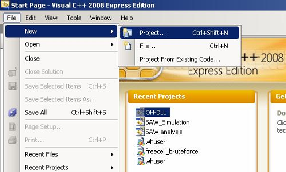
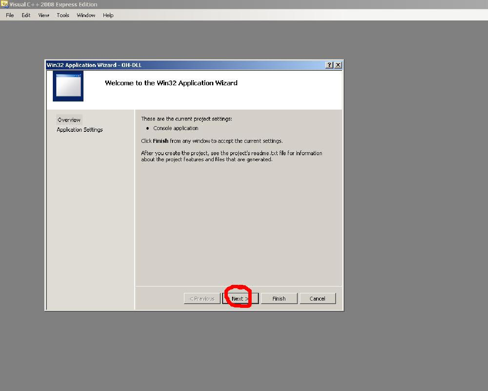
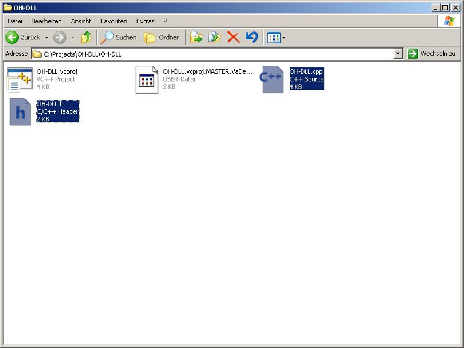

This tutorial got written by VaDe for the Wiki (http://www.maxinmontreal.com/wiki/index.php5?title=Part_A:_Compiling_the_first_dll).
Download MSVSE 2008 here: http://www.microsoft.com/express/download/ - Install with custom settings; there is no need to change anything.
Create a new project: File -> New -> Project.

Choose Win32 Project Application, you can choose any name/directory you want for your project, but I suggest you stick with OH-DLL and C:\Projects for this tutorial
Don’t click the "Finish" button yet, but click on "Next".

Select "DLL" and "Empty project" on the following screen and click the "Finish" button now.

Download and copy the attached files into the project folder, as you can see on the screen it should be C:\Projects\OH-DLL\OH-DLL. The files are available at the Wiki: http://www.maxinmontreal.com/wiki/index.php5?title=Image:OH-DLL.rar.



Select "Precompiled Headers" in the "C/C++" tree and select "Not Using Precompiled Headers".

In the "Linker" tree under "General" you can change the destination of the dll Output File if you need.

You are ready to compile the dll, click on Build -> Build Solution or simply "F7".